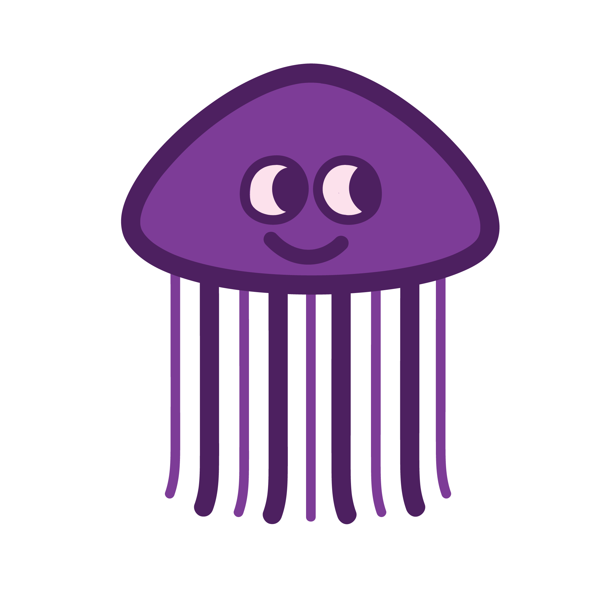

Basket of Monsters
A political typology quiz meets an exercise in empathy.
Click through to learn about poltics online, your own political priorities, and how to introduce respect and reciprocity online.
Did you know?
Voting rates are consistently lower among young people
Politics and Our Digital Landscape
Social media platforms like Facebook conduct studies where they test our political participation and activism online.
In a 2009 study at UC Santa Barbara, researchers found that our political participation online correlates heavily with our political participation offline.
Read the study
Peer Influence On and Offline
In another study conducted at UC San Diego in 2012, researchers found that people were more likely to vote if their Facebook friends selected a button that notified friends they voted.
How we conduct ourselves online, in general and politically, impacts the way others conduct themselves on and offline.
Read the study
Bridging the Gap
As our political and digital landscapes become more complicated, many think the political party divide will widen. Without empathy for others, this will surely be true.
The first step in understanding others, is understanding yourself!
Take the Quiz!
Some people know what their political opinions are, some don't, and some are in between.
Here, we will help you define where you stand in the context of our current political landscape.
Political Priorities
Each of these issues was selected from a Pew Research study that uncovered what issues are important to Americans based on political party.
Rank each action item based on what you think the government should spend time doing, from 1 (highest prioritiy) to 4 (lowest prioritiy).
Your cute monster character will be determined by your answers!
-
Reorder
Increase Education Spending
-
Reorder
Implement Universal Healthcare
-
Reorder
Reduce the National Debt
-
Reorder
Fight Climate Change
What your answers say about you:
Moving Forward
Now that you've thought about what your political priorities are, you are hopefully more equipped to understand where you (and others) stand within the political landscape.
In order to inspire respect and reciprocity online, it is important to conduct ourselves with empathy for others' views.
Learn More
Take Pew Research Center's Political Typology Quiz to learn even more about your own political views.